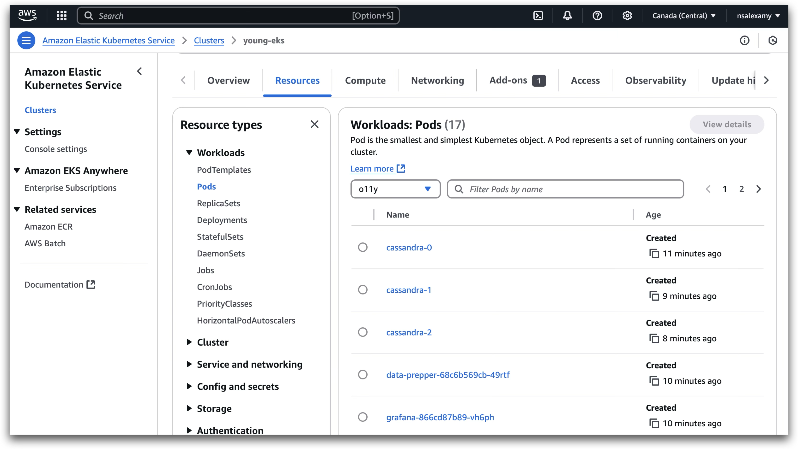
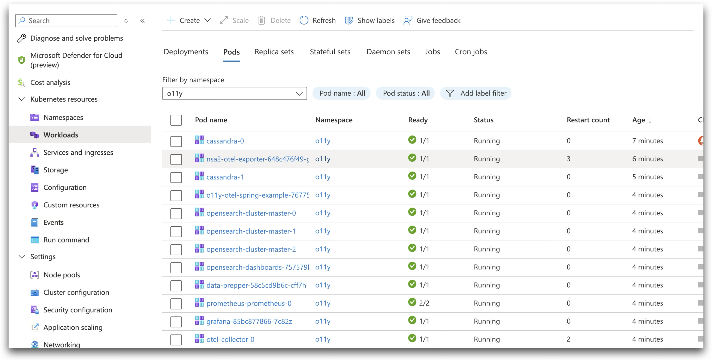

Deploying Applications Across Multiple Kubernetes Clusters
- Introduction
- Deployment Process for Service Foundry
- Building and Pushing Docker Images to a Container Registry
- Creating Persistent Volumes (PV) and Persistent Volume Claims (PVC) in Kubernetes
- Using Node Selector in Kubernetes for Multi-Cluster Deployments
- Deployment Results and Update Process for Service Foundry in Multi-Cluster Kubernetes Environments
- Conclusion
Introduction
Deploying an application across multiple Kubernetes clusters requires careful planning and the right set of tools. This guide will walk you through the essential steps and considerations for successfully deploying applications in a multi-cluster Kubernetes environment.
We will be using the following tools:
-
Docker CLI – For building and managing container images
-
Kubectl CLI & Kustomize – For interacting with Kubernetes clusters and managing configuration variations
-
Helm – For packaging, deploying, and managing Kubernetes applications
-
Container Registry – For storing and distributing container images
-
Kubernetes Cluster – The environment where applications will be deployed
-
Azure CLI & AWS CLI – For managing cloud-based Kubernetes resources
Additionally, we will explore Service Foundry, a Kubernetes-native solution for Application Observability, which provides a unified interface to manage and monitor multiple Kubernetes clusters efficiently.
What You Will Learn
This guide will cover key topics to help you deploy and manage applications across multiple Kubernetes clusters, including:
-
Setting up and using a Container Registry for storing Docker images
-
Building and pushing Docker Images for deployment
-
Creating Persistent Volumes (PV) and Persistent Volume Claims (PVC) for stateful applications
-
Using Node Selectors to control pod scheduling across cluster nodes
By the end of this guide, you will have a clear understanding of the best practices for deploying applications in a multi-cluster Kubernetes environment and how to leverage observability tools for monitoring and management.
Deployment Process for Service Foundry
Service Foundry is a Kubernetes-native solution for Application Observability, designed as a pre-configured, turnkey solution. It leverages Helm charts, Docker CLI, Kubectl CLI, and Kustomize to simplify the deployment process across multiple environments.
To ensure a seamless deployment, we will follow a structured four-step approach:
1. INIT: Generate Pre-Defined Configuration Files
In this initial step, Custom Generators are used to create predefined configuration files. These files serve as a starting point for the deployment process and can be customized based on specific requirements.
2. GENERATE: Create Kubernetes Manifests
Using Custom Generators, Kubernetes manifests are generated based on the predefined configuration files. These manifests define the desired state of Kubernetes resources, ensuring consistency across deployments.
3. BUILD (Local): Generate Required Applications
At this stage, the required application components are generated using Custom Generators. This step ensures that all application artifacts, including containerized services, are ready for deployment.
4. DEPLOY: Push Docker Images & Deploy Kubernetes Resources
In the final step:
-
Docker images are built and pushed to a Container Registry.
-
Helm, Kubectl, and Kustomize are used to deploy Kubernetes resources.
-
Cloud Provider CLI (AWS CLI / Azure CLI) is leveraged to authenticate and interact with cloud infrastructure.
-
Persistent Volumes (PV) and Persistent Volume Claims (PVC) are created as necessary.
Customization & Cloud Provider Dependency
-
Throughout the process, users can modify the generated configuration files and application components to meet specific deployment needs.
-
The first three steps (INIT, GENERATE, and BUILD) are cloud-agnostic, meaning they do not rely on any specific cloud provider.
-
The DEPLOY step, however, requires Cloud Provider authentication to push container images to the registry and create Kubernetes resources, particularly for Persistent Volumes (PV) and Persistent Volume Claims (PVC).
By following these structured deployment steps, Service Foundry ensures a reliable, repeatable, and scalable approach to application observability across Kubernetes clusters.
Building and Pushing Docker Images to a Container Registry
When working with Kubernetes-native solutions, building and pushing Docker images is a fundamental step for deploying applications. You may need to containerize your own applications or create custom Docker images and store them in a Container Registry for deployment.
Typically, this process involves using the Docker CLI with the docker build command, followed by the --push option to upload the image to a Container Registry. However, this approach requires Docker to be installed on your local machine. Some cloud providers, such as Azure, offer alternative methods to build and push Docker images without requiring a local Docker installation.
Using Azure Container Registry (ACR) Without Docker
Azure Container Registry (ACR) provides a built-in mechanism to build and push Docker images directly, eliminating the need for Docker on your local machine. This is particularly useful when working in environments where installing Docker is not feasible.
Steps to Build and Push a Docker Image to ACR Without Docker
-
Log in to Azure Container Registry (ACR):
$ az acr login --name $ACR_NAME-
Delete an existing Docker image from ACR (if it exists):
az acr repository show -n $ACR_NAME -t ${APP_NAME}:${DOCKER_TAG} && \
az acr repository delete -n $ACR_NAME -t ${APP_NAME}:${DOCKER_TAG} --yes-
Build and push the Docker image using Azure ACR Build:
az acr build --registry $ACR_NAME --image ${APP_NAME}:${DOCKER_TAG} ${PROJECT_DIR}/build/libsExplanation:
-
$ACR_NAME refers to the Azure Container Registry name, which can be either 'your-acr-name.azurecr.io' or simply 'your-acr-name'.
-
The Azure CLI automatically removes the azurecr.io suffix from the ACR name when using az acr build.
-
The Dockerfile should be located in ${PROJECT_DIR}/build/libs, and all files in this directory will be used to build the Docker image.
-
The image is built and pushed directly to ACR without requiring a local Docker installation.
Using AWS Elastic Container Registry (ECR)
Unlike Azure ACR, AWS Elastic Container Registry (ECR) does not provide a direct way to build and push Docker images without a local Docker installation. However, there are alternative solutions:
-
AWS CodeBuild – A managed CI/CD service that can build Docker images and push them to ECR.
-
Third-Party Tools – Solutions like BuildKit, Kaniko, Buildah, and Podman can be used to build images without requiring a local Docker daemon.
In this guide, however, we will use Docker to build and push images to AWS ECR.
Steps to Build and Push a Docker Image to AWS ECR
-
Log in to AWS Elastic Container Registry (ECR):
$ aws ecr get-login-password --region $AWS_REGION | docker login --username AWS --password-stdin $ECR_NAME-
Delete an existing Docker image from ECR (if it exists):
$ aws ecr describe-images --repository-name $APP_NAME --image-ids imageTag=$DOCKER_TAG --region $AWS_REGION &> null && \
aws ecr batch-delete-image --repository-name $APP_NAME --image-ids imageTag=$DOCKER_TAG --region $AWS_REGION-
Create an ECR repository (if it does not exist):
$ aws ecr describe-repositories --repository-names ${APP_NAME} --region $AWS_REGION &> /dev/null || \
aws ecr create-repository --repository-name ${APP_NAME} --region $AWS_REGION-
Build and push the Docker image to AWS ECR:
$ docker buildx build --platform linux/amd64 -t $ECR_NAME/$APP_NAME:$DOCKER_TAG ${PROJECT_DIR}/build/libs --pushExplanation:
-
$ECR_NAME refers to the AWS ECR repository name, which follows the format:
$AWS_ACCOUNT_ID.dkr.ecr.$AWS_REGION.amazonaws.com
-
Since MacBooks with Apple Silicon (ARM-based) require cross-compilation for AMD64-based platforms, we use Docker Buildx with the --platform linux/amd64 option.
-
The --push option ensures the built image is immediately pushed to AWS ECR after the build process.
Key Differences Between Azure ACR and AWS ECR for Docker Image Builds
-
Can build Docker images without Docker installed?
-
Azure ACR: es (using az acr build)
-
AWS ECR: no (requires Docker or third-party tools)
-
-
Native CLI command for building images?
-
Azure ACR: az acr build
-
AWS ECR: Requires AWS CodeBuild or third-party tools
-
-
Easy of use
-
Azure ACR: Simple, built-in support
-
AWS ECR: More complex, requires additional setup
-
-
Alternative solutions
-
Azure ACR: Not required(fully supported in ACR)
-
AWS ECR: CodeBuild, BuildKit, Kaniko, Podman
-
Creating Persistent Volumes (PV) and Persistent Volume Claims (PVC) in Kubernetes
When deploying an application across multiple Kubernetes clusters, managing Persistent Volumes (PVs) and Persistent Volume Claims (PVCs) is critical for stateful applications that require data persistence.
Each cloud provider offers different storage solutions for managing persistent storage:
-
Azure Kubernetes Service (AKS): Azure Disks, Azure Fileshares, Azure Blob Storage
-
Amazon Elastic Kubernetes Service (EKS): Amazon Elastic Block Store (EBS), Amazon Elastic File System (EFS)
Understanding these storage options and their limitations is essential for designing a multi-cloud Kubernetes architecture.
Persistent Volumes in Azure Kubernetes Service (AKS)
Available Storage Classes in AKS
Azure Kubernetes Service (AKS) provides various Storage Classes to create Persistent Volumes using Azure storage services. To list the available Storage Classes, run:
$ kubectl get storageclass | awk '{print $1}'Example Output:
NAME
azureblob-fuse-premium
azureblob-fuse-standard
azureblob-nfs-premium
azureblob-nfs-standard
azurefile
azurefile-csi
azurefile-csi-premium
azurefile-premium
default
managed
managed-csi
managed-csi-premium
managed-premiumEach Storage Class corresponds to different storage backends with varying performance and capabilities.
Default Storage Class in AKS
-
The default Storage Class in AKS is managed, which provisions Azure Disks for persistent storage.
-
Small instance types can attach up to 4 Azure Disks, while larger instance types support more disks, but still have limits.
-
When deploying applications using Helm, the default Storage Class is automatically used unless explicitly specified.
To list Persistent Volumes using the default Storage Class, run:
$ kubectl get pv | awk '/default/ && /o11y/' | awk '{print $1 "\t" $2 "\t" $7 "\t" $6}'Sample Output:
pvc-12b2c366-084e-476a-a6a7-6bcd78546e6c 8Gi default o11y/opensearch-cluster-master-opensearch-cluster-master-0 pvc-3797a6f9-8d54-4e81-ada7-509ec43fa191 8Gi default o11y/data-cassandra-2 pvc-44ee032f-3bf6-4bc0-b46a-b1d7613e2eff 10Gi default o11y/grafana pvc-5b0a59e0-36a5-409d-bccb-007e26e17fa7 8Gi default o11y/data-cassandra-0 pvc-6672c422-ebb2-47c3-885a-8169ea37ee1a 8Gi default o11y/data-cassandra-1 pvc-82d15850-3db2-4886-b4ac-324afe5b1eb0 8Gi default o11y/opensearch-cluster-master-opensearch-cluster-master-2 pvc-9d989c72-1803-49e9-856c-ee3aca72ed4f 8Gi default o11y/opensearch-cluster-master-opensearch-cluster-master-1
Here is an example of how to create a Persistent Volume and Persistent Volume Claim using the default Storage Class in AKS. They can be found in the Azure Portal under the Resource Group of the AKS cluster as Azure Disks.
These Persistent Volumes are created by Helm charts during the installation of the Service Foundry for Observability.
Using Azure Disks in AKS
Azure Disks are the most common way to create Persistent Volumes in AKS, but they come with limitations:
-
ReadWriteOnce (RWO) mode allows only one pod per node to access the volume.
-
Disk attachment limits depend on the AKS node instance type.
Creating a Persistent Volume Using Azure Disks
Persistent Volume (PV) Definition (pv.yaml)
apiVersion: v1
kind: PersistentVolume
metadata:
name: pv-data-postgresql-0
annotations:
pv.kubernetes.io/provisioned-by: disk.csi.azure.com
spec:
capacity:
storage: 100Gi
accessModes:
- ReadWriteOnce
persistentVolumeReclaimPolicy: Retain
storageClassName: managed-csi
csi:
driver: disk.csi.azure.com
volumeHandle: your-disk-id
volumeAttributes:
fsType: ext4-
ReadWriteOnce (RWO) restricts the volume to a single pod.
-
Use managed-csi-premium Storage Class for higher IOPS.
-
Volume Handle (your-disk-id) is required and can be retrieved using Azure CLI:
$ DISK_ID=$(az disk show --resource-group $RG --name $DISK_NAME --query id -o tsv)
$ echo $DISK_IDHere is an example of how to create a Persistent Volume Claim using Azure Disks.
Persistent Volume Claim (PVC) Definition (pvc.yaml)
apiVersion: v1
kind: PersistentVolumeClaim
metadata:
name: data-postgresql-0
namespace: o11y
spec:
accessModes:
- ReadWriteOnce
resources:
requests:
storage: 100Gi
volumeName: pv-data-postgresql-0
storageClassName: managed-csiApply the configurations:
kubectl apply -f pv.yaml -f pvc.yamlUsing Azure Fileshares in AKS
Azure Fileshares allow ReadWriteMany (RWX) Persistent Volumes, enabling multiple pods to access the same storage.
Creating a Persistent Volume Using Azure Fileshares
Secret for Azure Storage Account (storage-secret.yaml)
apiVersion: v1
kind: Secret
metadata:
name: my-storage-account-secret
namespace: my-namespace
type: Opaque
data:
azurestorageaccountname: base64encoded-storage-account-name (1)
azurestorageaccountkey: base64encoded-storage-account-key (2)Apply the secret:
$ kubectl apply -f storage-secret.yaml-
Persistent Volume (PV) Definition (pv-fileshare.yaml)**
apiVersion: v1
kind: PersistentVolume
metadata:
name: pv-my-fileshare
spec:
capacity:
storage: 5Gi
accessModes:
- ReadWriteMany
storageClassName: azurefile
azureFile:
secretNamespace: 'my-namespace'
secretName: my-storage-account-secret
shareName: my-fileshare
readOnly: falsePersistent Volume Claim (PVC) Definition (pvc-fileshare.yaml)
apiVersion: v1
kind: PersistentVolumeClaim
metadata:
name: pvc-my-fileshare
namespace: my-namespace
spec:
accessModes:
- ReadWriteMany
storageClassName: azurefile
volumeName: pv-my-fileshare
resources:
requests:
storage: 5GiApply the configuration:
$ kubectl apply -f pv-fileshare.yaml -f pvc-fileshare.yamlUsing Azure Blob Storage in AKS
Using Azure Blob Storage in AKS is quite similar to Azure Fileshares, but with some differences:
-
Azure Blob Storage is used for ReadWriteMany (RWX) Persistent Volumes.
-
Azure Blob Storage is ideal for large-scale data storage and data lakes.
apiVersion: v1
kind: PersistentVolume
metadata:
annotations:
pv.kubernetes.io/provisioned-by: blob.csi.azure.com
volume.kubernetes.io/provisioner-deletion-secret-name: ""
volume.kubernetes.io/provisioner-deletion-secret-namespace: ""
finalizers:
- external-provisioner.volume.kubernetes.io/finalizer
- kubernetes.io/pv-protection
name: pv-my-blob
spec:
accessModes:
- ReadWriteMany (1)
capacity:
storage: 5Gi
claimRef:
apiVersion: v1
kind: PersistentVolumeClaim
name: pvc-my-blob
namespace: my-namespace
csi:
driver: blob.csi.azure.com
volumeAttributes:
containername: my-blob (2)
csi.storage.k8s.io/pv/name: pv-my-blob
csi.storage.k8s.io/pvc/name: pvc-my-blob
csi.storage.k8s.io/pvc/namespace: my-namespace
protocol: nfs
secretnamespace: my-namespace (3)
secretname: my-storage-account-secret (4)
skuName: Standard_LRS
(5)
# volumeHandler is the unique identifier for the volume
volumeHandle: MC_your-resource-group_azure-region#my-storage-account#my-blob##my-namespace#
persistentVolumeReclaimPolicy: Delete
storageClassName: azureblob-nfs-standard
volumeMode: Filesystem| 1 | ReadWriteMany is used to be used by multiple pods. |
| 2 | The name of the Azure Blob Storage. |
| 3 | The namespace of the Secret. |
| 4 | The name of the Secret. |
| 5 | The volumeHandle is the unique identifier for the volume. |
Here is an example of how to create a Persistent Volume Claim using Azure Blob Storage.
apiVersion: v1
kind: PersistentVolumeClaim
metadata:
name: pvc-my-blob
namespace: my-namespace
spec:
accessModes:
- ReadWriteMany
# storageClassName: azureblob-nfs-premium
storageClassName: azureblob-nfs-standard (1)
resources:
requests:
storage: 5Gi
volumeName: pv-my-blob (2)| 1 | azureblob-nfs-standard Storage Class is used to create Persistent Volumes using Azure Blob Storage. |
| 2 | The name of the Persistent Volume. |
To create the Persistent Volume and Persistent Volume Claim, you can use the following command.
$ kubectl create -f pv-my-blob.yaml -f pvc-my-blob.yamlPersistent Volumes in Amazon Elastic Kubernetes Service (EKS)
Amazon EKS supports Persistent Volumes using:
-
Amazon Elastic Block Store (EBS) for ReadWriteOnce (RWO)
-
Amazon Elastic File System (EFS) for ReadWriteMany (RWX)
-
Listing Available Storage Classes in EKS **
-
$ kubectl get storageclass | awk '{print $1}'
Example Output:
NAME ebs-sc (default) efs-sc gp2
Default Storage Class in EKS
To use a StorageClass as the default StorageClass in EKS, you need to set the default StorageClass in the StorageClass definition.
Run the following command to set the default StorageClass in EKS.
$ kubectl patch storageclass ebs-sc -p '{"metadata": {"annotations": {"storageclass.kubernetes.io/is-default-class": "true"}}}'I chose 'ebs-sc' as the default StorageClass in EKS. The 'ebs-sc' StorageClass is used to create Persistent Volumes using Amazon EBS.
When installing applications using Helm, the default StorageClass is used to create Persistent Volumes.
Here is an example of how to create a Persistent Volume and Persistent Volume Claim using Amazon EBS. The 'ebs-sc' StorageClass is used to create Persistent Volumes using Amazon EBS and we can find the Persistent Volumes from EC2 / Elastic Block Store in the AWS Console.
These Persistent Volumes are created by Helm charts during the installation of the Service Foundry for Observability.
Using Amazon EBS in EKS
Amazon EBS volumes are automatically provisioned without requiring a PV definition.
Persistent Volume Claim (PVC) Definition (pvc-ebs.yaml)
apiVersion: v1
kind: PersistentVolumeClaim
metadata:
name: pvc-ebs
namespace: my-namespace
spec:
accessModes:
- ReadWriteOnce (1)
storageClassName: ebs-sc (2)
resources:
requests:
storage: 1Gi| 1 | ReadWriteOnce is used to be used by a single container in a single pod. |
| 2 | ebs-sc Storage Class is used to create Persistent Volumes using Amazon EBS. |
Apply the PVC:
$ kubectl create -f pvc-ebs.yamlUsing Amazon EFS in EKS
Amazon EFS provides shared ReadWriteMany (RWX) Persistent Volumes.
Persistent Volume (PV) Definition (pv-efs.yaml)
apiVersion: v1
kind: PersistentVolume
metadata:
name: pv-efs
spec:
capacity:
storage: 10Gi
volumeMode: Filesystem
accessModes:
- ReadWriteMany (1)
persistentVolumeReclaimPolicy: Retain
storageClassName: efs-sc (2)
csi:
driver: efs.csi.aws.com
# Replace with your EFS FileSystem ID
volumeHandle: fs-xxxxxxxx (3)| 1 | ReadWriteMany is used to be used by multiple pods. |
| 2 | efs-sc Storage Class is used to create Persistent Volumes using Amazon EFS. |
| 3 | The EFS FileSystem ID is required to create the Persistent Volume. |
Persistent Volume Claim (PVC) Definition (pvc-efs.yaml)
apiVersion: v1
kind: PersistentVolumeClaim
metadata:
name: pvc-efs
namespace: my-namespace
spec:
accessModes:
- ReadWriteMany
storageClassName: efs-sc (1)
resources:
requests:
storage: 5Gi (2)| 1 | efs-sc Storage Class is used to create Persistent Volumes using Amazon EFS. |
| 2 | The size of the Persistent Volume. |
Apply the configurations:
$ kubectl create -f pv-efs.yaml -f pvc-efs.yaml-
AKS uses Azure Disks (RWO), Azure Fileshares (RWX), and Azure Blob Storage (RWX).
-
EKS uses Amazon EBS (RWO) and Amazon EFS (RWX).
-
Cloud provider storage solutions differ, so understanding default Storage Classes and limitations is essential for multi-cloud deployments.
Using Node Selector in Kubernetes for Multi-Cluster Deployments
When deploying an application across multiple Kubernetes clusters, controlling where pods are scheduled is essential for resource optimization, performance, and workload segregation.
The Node Selector is a Kubernetes scheduling mechanism that allows you to specify which nodes should run your application pods. It works by using node labels, ensuring that workloads are deployed to the appropriate Node Pools (AKS) or Node Groups (EKS).
By leveraging Node Selectors, you can:
-
Assign workloads to specific node types (e.g., GPU nodes, high-memory nodes).
-
Isolate workloads for security and compliance reasons.
-
Optimize performance by scheduling pods on specialized nodes.
How Node Selectors Work
The Node Selector works by matching pod scheduling constraints with node labels. Any label attached to a node can be used as a Node Selector.
Basic Node Selector Example
spec:
nodeSelector:
key: value-
The key is the node label (e.g., environment).
-
The value is the expected label value (e.g., production).
-
The pod will be scheduled only on nodes that have the specified label.
Node Selector in Azure Kubernetes Service (AKS)
In AKS, each Node Pool is automatically assigned a label:
kubernetes.azure.com/agentpool: <node-pool-name>This label can be used as a Node Selector to schedule workloads on a specific Node Pool.
Example: Using Node Selector in AKS
spec:
nodeSelector:
agentpool: my-node-poolAlternatively, the fully qualified label can be used:
spec:
nodeSelector:
kubernetes.azure.com/agentpool: my-node-poolWhen to Use Node Selector in AKS?
-
Assigning workloads to specific Node Pools (e.g., GPU, Spot, or high-memory nodes).
-
Running applications in different environments (e.g., production vs. development).
-
Ensuring cost efficiency by deploying workloads to nodes with the right pricing tier.
Node Selector in Amazon Elastic Kubernetes Service (EKS)
In EKS, each Node Group is assigned the label:
eks.amazonaws.com/nodegroup: <node-group-name>Example: Using Node Selector in EKS
spec:
nodeSelector:
eks.amazonaws.com/nodegroup: my-node-groupWhen to Use Node Selector in EKS?
-
Deploying workloads on specific Node Groups (e.g., GPU-optimized, compute-intensive).
-
Segregating workloads based on instance types (e.g., ARM vs. x86 nodes).
-
Implementing cost-saving strategies (e.g., Spot instances for non-critical workloads).
Using a Common Label for Multi-Cluster Deployments
When deploying applications to both AKS and EKS, it is beneficial to use a common node label across clusters. This ensures portability and reduces the need for cluster-specific configurations.
Adding a Custom Label to Nodes in AKS
$ kubectl label nodes <node-name> my-label=custom-nodeAdding a Custom Label to Nodes in EKS
$ kubectl label nodes <node-name> my-label=custom-nodeOnce the label is applied to nodes in both AKS and EKS, you can use the same Node Selector in your deployment manifests:
spec:
nodeSelector:
my-label: custom-nodeAdvantages of Using a Common Label
-
Consistent deployment strategy across different cloud providers.
-
Easier configuration management without modifying manifests per cluster.
-
Scalability for future multi-cloud expansions.
Conclusion of Node Selector in Multi-Cluster Deployments
-
Node Selectors enable workload scheduling based on node labels, ensuring optimal resource utilization.
-
AKS uses agentpool labels, while EKS uses eks.amazonaws.com/nodegroup labels to identify node pools.
-
Using custom node labels provides a unified approach for multi-cluster Kubernetes deployments.
By implementing Node Selectors correctly, you can enhance performance, reduce costs, and improve workload management in Kubernetes clusters.
Deployment Results and Update Process for Service Foundry in Multi-Cluster Kubernetes Environments
Deployment Results
After applying the configuration changes, Service Foundry for Observability is successfully deployed to both Azure Kubernetes Service (AKS) and Amazon Elastic Kubernetes Service (EKS) clusters.
Persistent Storage Allocation
AKS (Azure Kubernetes Service)
-
Azure Disks are used for ReadWriteOnce (RWO) workloads.
-
Azure Fileshares are used for ReadWriteMany (RWX) workloads.
EKS (Amazon Elastic Kubernetes Service)
-
Amazon EBS is used for ReadWriteOnce (RWO) workloads.
-
Amazon EFS is used for ReadWriteMany (RWX) workloads.
Container Image Management
-
Custom Docker Images are built and pushed to the appropriate container registry based on the selected cloud provider:
-
Azure Container Registry (ACR) for AKS deployments.
-
AWS Elastic Container Registry (ECR) for EKS deployments.
Updating Service Foundry for Multi-Cluster Deployments
To streamline the deployment process across multiple Kubernetes clusters, a custom Generator is used to automatically generate configuration files tailored to the selected Cloud Provider and Container Registry.
Using the Generator to Initialize the Deployment
Execute the following command to initialize the configuration files for Service Foundry for Observability:
$ yo nsa2:o11y-foundry initExample Generator Output
Initializing Observability Foundry Generator ? Kubernetes namespace o11y ? Cloud Provider (Azure, AWS, GCP) (Use arrow keys) (1) azure ❯ aws gcp ? Container Registry (ACR or ECR. e.g. my-cr.azurecr.io) (112211221122.dkr.ecr.ca-central-1.amazonaws.com) (2)
User Inputs During Generation
-
Select the Cloud Provider (Azure, AWS, or GCP).
-
Determines which Persistent Volume storage solutions and Kubernetes configurations will be used.
-
-
Enter the Container Registry URL.
-
Specifies where Docker images should be pushed before deployment.
-
Configuration File Generation
Once the user selects the Cloud Provider and Container Registry, the Generator:
-
Automatically generates the configuration files and deployment scripts for the selected Kubernetes environment.
-
Ensures consistency across multi-cluster deployments by providing pre-configured manifests tailored for AKS, EKS, or GCP.
Deployment Process
Deployment to Amazon Elastic Kubernetes Service (EKS)
$ ./deploy-o11y-foundry-eks.shAfter applying these changes, Service Foundry for Observability is deployed to the EKS cluster. The Persistent Volumes are created using Amazon EBS and Amazon EFS.

Deployment to Azure Kubernetes Service (AKS)
$ ./deploy-o11y-foundry-aks.shAfter applying these changes, Service Foundry for Observability is deployed to the AKS cluster. The Persistent Volumes are created using Azure Disks and Azure Fileshares.

Conclusion
This guide provided a comprehensive walkthrough on deploying an application across multiple Kubernetes clusters. Throughout this guide, you gained insights into key concepts and best practices for managing multi-cluster deployments efficiently.
Key Takeaways:
-
Multi-Cluster Deployment: You learned how to deploy an application to both Azure Kubernetes Service (AKS) and Amazon Elastic Kubernetes Service (EKS) while ensuring optimal resource utilization.
-
Container Registry & Image Management: You explored how to build and push Docker images to Azure Container Registry (ACR) and AWS Elastic Container Registry (ECR)—even in environments where Docker is not installed locally.
-
Persistent Storage Solutions: You learned how to configure Persistent Volumes (PVs) and Persistent Volume Claims (PVCs) using:
-
Azure Storage: Azure Disks, Azure Fileshares, Azure Blob Storage
-
AWS Storage: Amazon EBS, Amazon EFS
-
-
Node Scheduling with Node Selectors: You discovered how to control pod scheduling by using Node Selectors, including how to:
-
Utilize cloud-specific node labels (agentpool for AKS, nodegroup for EKS).
-
Implement a common labeling strategy for consistency across multiple Kubernetes clusters.
-
Explore More
All my LinkedIn articles can be found here:
By implementing these techniques, you can streamline deployments, enhance observability, and optimize workload management across cloud environments.
Internal Link: docs/service-foundry/04-deploy-app-to-multiple-k8s-cluster